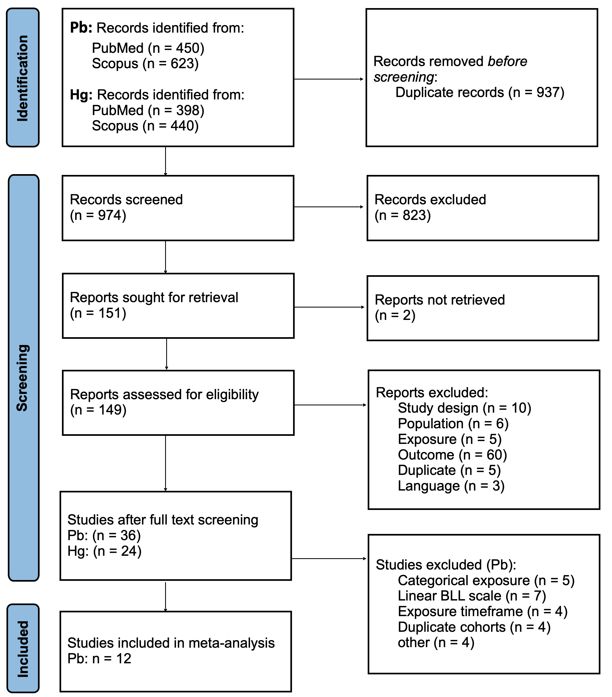

Quantifying uncertainty: A comparison of Bayesian and frequentist meta-analytic frameworks applied to lead exposure and children’s IQ
![]()
1 German Environment Agency, Environmental Hygiene, Berlin, Germany
2 French National Agency for Food, Environmental and Occupational Health & Safety, Maisons-Alfort, France
3 Karolinska Institutet, Department of Medicine Solna, Division of Clinical Epidemiology, Stockholm, Sweden
✉ Correspondence: Paulina Sell <paulina.sell@uba.de>
Notes
Alternative titles:
A methodological comparison of Bayesian and frequentist meta-analyses of epidemiological studies on lead exposure and children’s intelligence quotient (title so far)
Quantifying uncertainty in the association between lead exposure and children’s IQ: a comparison of Bayesian and frequentist meta-analytic frameworks
Quantifying uncertainty: A methodological comparison of Bayesian and frequentist meta-analyses of studies on lead exposure and children’s IQ
Quantifying uncertainty: A comparison of Bayesian and frequentist meta-analytic frameworks applied to lead exposure and children’s IQ
Keywords
Uncertainty quantification
Bayesian meta-analysis
Methods
Lead exposure
Children’s IQ
Environmental epidemiology
Highlights
- Bayesian framework provides improved uncertainty quantification
- Results underscore health risk of lead exposure, even in low concentration
- Bayesian model yields full probability distributions, not just point estimates
- Bayesian and frequentist meta-analyses yield similar estimates for lead’s effect on IQ
Graphical abstract
Abstract
(250 words limit in Environment International)
Objective: Quantifying uncertainty is crucial for risk assessment and policy-making but current meta-analytic approaches fall short in this regard. Bayesian meta-analysis provides probabilistic uncertainty quantification. We compared frequentist and Bayesian frameworks, using lead exposure and children’s intelligence quotient (IQ) as a case study.
Methods: We systematically searched PubMed and Scopus for epidemiological studies on blood lead level (BLL) and IQ score in children. Risk of bias (RoB) was assessed and regression coefficients were harmonized to the \(\log_e\) scale. In both meta-analyses, we used random-effects models and included the same effect estimates. The frequentist approach used restricted maximum-likelihood estimation. The Bayesian meta-analysis employed a hierarchical model with weakly-informative priors. Sensitivity analyses examined robustness to RoB and prior specification. \(\tau^2\) and \(I^2\) were estimated as measures of between-study heterogeneity.
Results: Twelve studies were included after screening. The frequentist approach yielded a pooled estimate of -2.45 (95% confidence interval (CI): -3.7 to -1.2) IQ points per unit increase in \(\log_e\)-transformed BLL (µg/dL). The Bayesian model yielded a mean pooled estimate of -2.28 (95% credible interval (CrI): -3.56 to -1.06). Between-study heterogeneity was substantial (frequentist: \(\tau^2\) = 3.3, \(\text{I}^2\) = 85%; Bayesian: \(\tau^2\) = 3.8, \(\text{I}^2\) = 83%). The Bayesian approach provided a posterior distribution for heterogeneity, quantifying uncertainty from between-study variation. Sensitivity analyses showed robustness to RoB and prior specification. The Bayesian approach was less sensitive to outlier studies, resulting in a lower pooled effect.
Conclusion: We provide updated pooled estimates for the effect of lead exposure on children’s IQ. The Bayesian approach provides posterior distributions, enabling direct probability statements, e.g. about exceeding risk thresholds, and comparative assessments across pollutants. These features are of particular value regarding risk assessment and policy-making.
1 Background
Lead (Pb) is a pervasive environmental pollutant originating from anthropogenic and natural sources. Although concentrations have declined globally in past decades following the phase-out of leaded gasoline, lead remains present in the environment and is detected in human blood samples [1,2]. In Europe, primary exposure sources include dietary products, drinking water, and indoor dust [3,4]. The most recent Global Burden of Disease study estimated that in 2023, 3.4 million Disability-Adjusted Life Years (DALYs, 95% uncertainty interval (UI): 2.7 to 4.0 million) were attributable to lead exposure in the European Union (EU) [5]. This underscores the continued public health significance even of low-level exposure.
Exposure to lead is associated with multiple adverse health outcomes across the human life course, including decreased kidney function [6], liver disease [7], coronary artery atherosclerosis [8], cardiovascular mortality [9], infertility in women [10], attention-deficit/hyperactivity disorder in children [11], and antisocial behavior [12]. Among these endpoints, impaired cognitive development in children — observable as reduced IQ scores — [13–16] represents a particularly critical endpoint with high public health relevance. Children are especially vulnerable to the neurotoxic effects of lead due to their developing nervous systems and relatively high exposure per body mass. Because lead-associated IQ decrements are irreversible and persist throughout life, they lead to substantial and enduring societal costs [17], making continued efforts to accurately characterize the exposure-response relationship important for evidence-based policy.
Blood lead levels (BLL) in the EU have declined markedly and now predominantly fall below 5 µg/dL [18], well below the concentrations examined in many earlier studies (<10 µg/dL). Importantly, there is no evidence for a threshold concentration below which the effects of lead on IQ can be assumed to be negligible [19,20]. There is evidence for a supralinear exposure-response relationship with steeper IQ decrements per unit increase in BLL at low concentrations compared to higher concentration ranges [16,21]. These findings highlight the need for an updated quantitative synthesis that reflects both recent epidemiological evidence and the lower exposure range now predominant in European populations, incorporating recent data to inform risk assessment at currently relevant exposure levels.
Existing burden of disease assessments at national and global scales [5,17,22–24] have predominantly relied on the foundational study by Lanphear et al. (2005), a pooled analysis of seven cohort studies, or subsequent re-analyses of the same data [16,25]. While these landmark studies have substantially shaped research and policy on childhood lead exposure, methodological issues and errors have been raised. These include the use of performance IQ instead of full-scale IQ and an erroneous back-transformation of BLL in one cohort in the Lanphear et al. study [25,26]. These limitations, combined with the availability of more recent epidemiological data, underscore the need not only for an updated evidence synthesis, but also for methodologically robust approaches that can provide reliable exposure-response estimates for burden of disease and risk assessments.
Methodological advances in meta-analysis offer an opportunity to enhance the utility of synthesized estimates for burden of disease and risk assessment applications. While frequentist meta-analysis has been a conventional approach in environmental epidemiology, Bayesian meta-analysis provides a coherent framework for uncertainty quantification through posterior distributions that inherently incorporate both within-study and between-study variability [27]. Unlike frequentist confidence intervals, which are often misinterpreted as probabilistic [28], Bayesian credible intervals directly represent the probability distribution of the parameter of interest, facilitating transparent communication of uncertainty. Furthermore, Bayesian posterior distributions can be directly propagated into probabilistic burden of disease and risk assessments, providing seamless integration with probabilistic frameworks in public health decision-making. By comparing frequentist and Bayesian approaches, we explore how the analytical framework and its approach to uncertainty quantification influence exposure-response estimates and their application.
The aim of this study is twofold: first, to synthesize and quantitatively pool available epidemiological findings on the association between BLL and IQ scores in children; and second, to conduct both frequentist and Bayesian meta-analyses, comparing how these analytical frameworks impact exposure-response estimates and uncertainty quantification.
2 Methods
2.1 Literature Review
This review adheres to the Preferred Reporting Items for Systematic reviews and Meta-Analyses (PRISMA) guidelines [29]. The checklist can be found in the supplementary file 1. The reporting of the Bayesian methods and their results was guided by the Bayesian Analysis Reporting Guidelines (BARG) [30].
We conducted a literature review to identify published studies investigating the association between postnatal (concurrent) exposure to Pb and IQ loss in children. This study was conducted within the EU-funded project “Partnership for the Assessment of Risks from Chemicals” (PARC). The literature review presented here was used in multiple case studies within PARC, including one on the health burden of (methyl)mercury and lead on IQ loss. Here, we will only report results for concurrent lead exposure and IQ loss, but the figures and tables documenting the literature review contain parts of the search for other associations and exposure timeframes.
We searched for articles published between January 2005 and July 2023. The year 2005 was chosen because burden of disease studies have predominantly relied on a landmark paper published in 2005 [16] and an update of the evidence base is therefore warranted, particularly given that lead exposure concentrations have decreased substantially since then.
Search queries in PubMed and Scopus included the following terms: substance (Pb - including Mesh terms), outcome (IQ and neurodevelopment), population (children) and results (association, exposure-response function) (supplementary file 2).
All titles and abstracts were screened by two reviewers. Any conflicts were resolved by a third person. Full texts were then assessed by one reviewer. Publications were considered relevant according to predefined PECOTS – Population (children aged 0 to 11 years), Exposure (biological measures of Pb from all matrices), Comparator (no exposure or lower levels of exposure), Outcome (IQ shift), Timing of exposure (no restriction) and Setting (no restriction) (Tab. 1).
| PECOTS domain | Inclusion criteria |
|---|---|
| Population | Human population < 18 years of age (infants, children, teenagers) OR pregnant women and women in childbearing age |
| Exposure | Exposure to lead and methylmercury through HBM/internal exposure data (urine, blood, hair, bones). |
| Comparators | Investigating associations between exposure and outcome for single substance or a mixture AND reporting regression coefficient and statistical uncertainty |
| Outcomes | IQ shift in children < 18 |
| Timing | Current exposure of the children (post-natal) OR current exposure of pregnant women (pre-natal). Both are considered medium- to long-term timing of exposure. |
| Settings | All settings (location) |
We excluded reviews and background articles that inventoried the literature without quantitatively summarizing the results. We also excluded references written in languages other than English.
For this present study, only studies that used a continuous, log-transformed BLL scale were included, so that effect estimates could be harmonized The exposure timeframe for this study was restricted to concurrent, i.e. IQ and BLL measurements must have been conducted at the same time. Descriptive study data was extracted using a grid based on the one proposed by the Office of Health Assessment and Translation within the US National Toxicology Program (NTP OHAT) [31]. For all included studies, effect estimates from the most-adjusted model were extracted and the adjustment set was recorded.
2.2 Risk of Bias Assessment
To assess study quality, we conducted a risk of bias assessment using the rapid Risk of Bias (RoB) tool with a specific focus on human observational epidemiological studies [32]. Each included publication was assessed for RoB in the following domains: selection, exposure, outcome, confounding, follow-up, analysis, and selective reporting. In total, each study was evaluated using 15 items and scored as either high RoB (-), some concerns (+/-), low RoB (+) or no information(?). If an item was not applicable to the study type (e.g. follow-up in cross-sectional studies), they were marked as “n.a.”. The overall RoB for each individual study was then categorized as either low, moderate or high, following two different summary metrics provided by the RoB tool (for more details, please refer to [32]). Each publication was first assessed by one researcher. Subsequently, consensus with the large language model (LLM) Claude Sonnet 4.6 (Anthropic) was sought. This was done by uploading the list of all RoB items along with the respective publication. Then, the LLM was prompted to assess the study, using the RoB items. If there were any deviations in the judgement of the researcher and the LLM, the respective item was revisited by the researcher who made the final decision.
2.3 Harmonization of Effect Estimates
Studies investigating the association between lead exposure and IQ in children have made different assumptions regarding the shape of the exposure-response relationship. While some studies assume a linear relationship [33,34], this assumption may only be valid within very narrow concentration ranges [25]. Studies that tested multiple shapes of the exposure-response function have concluded that a log-linear relationship, where BLL are logarithmically transformed, represents a more appropriate statistical model [25,35].
The general form of regression model used for a log-linear association is: \[ \text{y}_{pred} = \alpha + \beta \times {log_{b}}(X) + \varepsilon \tag{1}\]
Where \(\text{y}_{pred}\) represents the IQ score, \(\alpha\) is the intercept, \(\beta\) is the regression coefficient (slope), \(X\) denotes BLL, \(b\) is the logarithmic base, and \(\varepsilon\) is the error term.
In the literature, different logarithmic bases are used to transform BLL, including the natural logarithm (\(\log_e\), where \(e \approx 2.718\)), base 2, and base 10. To enable pooling of the effect estimates, we harmonized all regression coefficients and their standard error (SE) to increments on the natural logarithm scale (\(\log_e\)). The calculations are documented in supplementary file 3.
In some publications, BLL was not on a logarithmic but on an untransformed, linear scale. These were excluded from the meta-analysis, as transformation of effect estimates for linear BLL to log-linear could not be justified based on visual inspection (include plots in supplement?).
2.4 Meta-Analysis
In order to quantitatively synthesize the available epidemiological literature on the association of children’s blood lead levels and IQ, we conducted separate meta-analyses in the Bayesian and frequentist analytical framework, and compared their results.
To make the results of both approaches comparable, both included the same effect estimates from the identified publications, and featured analogous model structure. We estimated pooled effect estimates for the loss of IQ points per continuous unit increase in \(\log_e\)-transformed BLL (µg/dL).
R version 4.4.2 (2024-10-31) [36] was used for all computations. All code for this study is publicly available on GitHub: https://github.com/PaulinaSell/lead-IQ_meta-analysis.
2.4.1 Bayesian Meta-Analysis
In the Bayesian framework, we employed a random-effects meta-analysis model. Each study’s observed effect size \(\hat{\theta}_{k}\) is modelled as a noisy reflection of the true underlying effect in that study’s sample \(\theta_{k}\), with the noise represented by the within-study sampling error \(\sigma_{k}\) (treated as known based on reported study statistics). These study-specific true effects are themselves modelled as draws from an overarching normal distribution which describes the true average effect across studies \(\mu\) and the between-study heterogeneity \(\tau\).
\[ \begin{split} \hat{\theta}_{k} &\sim \mathcal{N}(\theta_{k}, \sigma_{k}) \\ \theta_{k} &\sim \mathcal{N}(\mu, \tau) \\ \end{split} \tag{2}\]
Where \(\hat{\theta}_{k}\) is the observed effect size for study \(k\), \(\sigma_{k}\) is the within-study sampling standard deviation for study \(k\), \(\theta_{k}\) is the true underlying effect for study \(k\), \(\mu\) is the overall pooled effect and \(\tau\) is the between-study standard deviation (heterogeneity).
The Bayesian model was fit using the R package brms [37] version 2.22.0. Sampling was done using Markov chain Monte Carlo (MCMC). We ran four chains with 4,000 iterations each, of which 2,000 iterations were discarded as warmup, resulting in 8,000 total post-warmup draws. MCMC convergence was assessed using traceplots and the Gelman-Rubin statistic (\(\hat{R}\)). Chain resolution was assessed using the effective sample size (ESS).
Heterogeneity \(\tau\) was directly modelled as a parameter (Equation 2). \(I^2\) was calculated using the typical within-study variance calculated with metafor (frequentist framework) so that both \(I^2\) results are comparable (supplementary file x).
In the Bayesian framework, domain knowledge is elicited and captured as probability distributions (priors) which are subsequently updated by the newly observed data, resulting in a posterior distribution. Prior distributions are specified for all model parameters, i.e. the overall pooled effect estimate \(\mu\) and between-study standard deviation (heterogeneity) \(\tau\). For both parameters, weakly-informative priors were chosen so that the posterior distributions are softly being bounded to realistic ranges of results. The priors are specified on the same scale as the harmonized effect estimates (IQ shift per unit increase in \(\log_e\)-transformed BLL).
For the overall pooled effect \(\mu\), a normally distributed prior centered at -1 with a standard deviation (SD) of 2 was chosen. This reflects the prior belief that the overall pooled effect lies between -5 and 3 with \(\sim\) 95% probability. The center point of the prior was chosen to be -1 because the negative effects of lead on the developing nervous system and its toxicological mechanisms of action are well established [19].
Since variance terms, such as the between study heterogeneity \(\tau\), must be positive, a truncated normal distribution centered at 0 with a SD of 2 was specified. This reflects the prior belief that heterogeneity \(\tau\) is small to moderate, but does not exclude large heterogeneity if this is present in the included studies. In summary, the following priors were specified for the Bayesian model:
\[ \begin{split} \mu &\sim \mathcal{N}(-1, 2) \\ \tau &\sim \mathcal{N^+}(0, 2) \end{split} \tag{3}\]
Prior predictive checks were conducted using the bayesplot package [38] to assess the appropriateness of the specified priors. Posterior predictive checks were carried out to assess if the model structure is able to capture the underlying data well. Additionally, a sensitivity analysis with alternative priors was conducted, as described below.
2.4.2 Frequentist Meta-Analysis
For the frequentist meta-analysis, we employed a random-effects model, assuming the same multilevel structure as for the Bayesian model (Equation 2). Parameters were estimated via the restricted maximum-likelihood (REML) estimation from the R package metafor version 4.8-0 [39]. The \(I^2\) statistic was calculated as a measure of heterogeneity, representing the proportion of total variation attributable to between-study heterogeneity \(\tau^2\).
2.5 Sensitivity Analysis
We conducted two sets of sensitivity analyses.
To examine the sensitivity of the results to possibly biased study estimates, we ran both the frequentist and Bayesian models again twice, excluding (1) studies with a high RoB rating and (2) with a high or moderate RoB.
To examine the sensitivity of the results to the choice of prior distributions, we fit the Bayesian model again for two alternative sets of priors. The first set of priors was more informative (narrower) than the main priors, with \(\mu \sim \mathcal{N}(-1, 1)\) and \(\tau \sim \mathcal{N}^+(0, 1)\). The second set of priors was less informative (wider) with \(\mu \sim \mathcal{N}(0, 6)\) and \(\tau \sim \mathcal{N}^+(0, 6)\). Note that for the main effect, the broader prior is centered around 0, giving equal weight to the probability of a protective and detrimental effect of lead.
3 Results
3.1 Literature Review
The systematic review was conducted with a larger scope and was used as a basis for multiple case studies within the PARC project, which is why it includes another substance (mercury, Hg). The systematic search in PubMed and Scopus yielded 1,073 records for lead. After duplicate removal, title and abstract of 974 records (Pb & Hg) was screened, which left 149 records (Pb & Hg) for full text screening. After this last screening, 36 records remained for Pb.
These were then assessed for their eligibility for the meta-analysis. Twelve studies were excluded because they either transformed the BLL variable into categories or left it on a linear (untransformed) scale. Four studies were excluded because they exclusively assessed the effects of prenatal lead exposure. Furthermore, four studies were excluded because the cohorts overlapped with another study and would lead to duplicates. Four additional studies were excluded because they either solely reported effects of chemical mixtures, used non-linear models (including the use of splines) or failed to report essential statistics. Finally, twelve studies were included in the meta-analysis. Study characteristics and regression coefficients (effect estimates) are shown in Tab. 2.
| First author, year | Study population (N) | Geographical area | Mean age / age range | BLL indicator | BLL value (µg/dL unless statedotherwise) | IQ measurement instrument | Mean IQ | Adjustment set (confounder) | Original BLL scale | Original regression coefficient | Original SE | Harmonized regression coefficient (log(e) scale) | Harmonized SE |
|---|---|---|---|---|---|---|---|---|---|---|---|---|---|
| Bauer 2020 | 635 | Province of Bresia, Italy | 10-14 | Median | 1.3 | WISC-III (FSIQ) | 107.1 | Sex, age, SES, hemoglobin, HOME score and HOME score squared | Log(e) | -0.10 | 0.87 | -0.10 | 0.87 |
| Crump 2013 | 1355 | USA (Boston, Cleveland, Cincinnati, Rochester), Mexico, Australia (Port Pirie) and Yugoslavia | 5-7 | Mean | 10.0 | WISC (FSIQ) | 94.4 | Site, HOME score, birth weight, maternal IQ, maternal education, maternal alcohol use, maternal tobacco use and birth order | Log(e) | -3.31 | 0.63 | -3.31 | 0.63 |
| Dantzer 2020 | 224 | USA (Greater Cincinnati, Ohio metropolitan region) | 12 | Mean | 0.6 | WISC-IV (FSIQ) | 101.6 | Caregiver FSIQ (WASI-2), BMI at age 12, and a measure of neighborhood-level deprivation based on census-tract level socioeconomic indicators | Log(10) | -13.15 | 3.71 | -5.71 | 1.61 |
| Desrochers-Couture 2018 | 606 | Canada (10 different study sites) | 3-4 | Mean | 0.7 | WPPSI-III (FSIQ) | 107.0 | Child age, child sex, evaluation site, marital status, familial income, HOME score, Parenting Stress Index, and cord blood lead (log-2 scale) | Log(2) | 0.01 | 0.04 | 0.02 | 0.06 |
| Earl 2016 | 127 | Australia, New South Wales, Port Pirie and Broken Hill | 7-8 | Mean | 3.9 | WISC-IV (FSIQ) | 100.5 | Current maternal smoking, breastfeeding, income, HOME score and stressful life events | Log(10) | -13.50 | 5.10 | -5.86 | 2.22 |
| Hong 2015 | 839 | South Korea (two urban cities, two industrial cities, and one rural district) | 8-11 | Mean | 1.8 | Korean WISC (FSIQ) | 110.1 | Demographic variables and ADHD-RS and CPT scores, plus log10-transformed environmental chemical concentrations (blood mercury and manganese concentrations, and creatinine-standardized urine concentrations of cotinine, phthalate metabolites, and Bisphenol A) | Log(10) | -7.23 | 3.14 | -3.14 | 1.37 |
| Lee 2021 | 502 | South Korea (Seoul, Gyeonggi, and Incheon provinces) | 6 | Mean | 1.4 | Korean WISC (FSIQ) | 109.9 | Maternal education, exposure to environmental tobacco smoke during pregnancy, maternal ageand maternal IQ | Log(e) | -3.83 | 2.25 | -3.83 | 2.25 |
| Lucchini 2019 | 299 | Southern Italy (City of Taranto, Puglia region, 5 sub-areas, incremental distance from a highly industrial area) | 6-12 | Median | 8.4 ng/mL | WISC-IV (FSIQ) | 106.0 | Age, sex, maternal, Standard Progressive Matrice, non-verbal intellectual efficiency, HOME score and distance from the point source | Log(e) per ng/mL | -1.10 | 0.84 | -1.10 | 0.84 |
| Lucchini 2012 | 299 | Northern Italy (Valcamonicaand Garda Lake regions) | 11-14 | Median | 1.5 | WISC-III (FSIQ) | 106.3 | SES, area, alcohol consumption, hemoglobin levels | Log(e) | -3.48 | 1.48 | -3.48 | 1.48 |
| Menezes-Filho 2018 | 155 | Brazil (Municipality of Simões Filho, metropolitan region of Salvador, Bahia) | 7-12 | Mean | 1.6 | WASI (FSIQ) | 75.5 | Age, maternal IQ and manganese levels | Log(10) | -8.61 | 2.97 | -3.74 | 1.29 |
| Roy 2013 | 708 | India (Chennai) | 3-7 | Mean | 11.5 | Binet–Kamath Scale of Intelligence (Tamil version of Stanford–Binet) (FSIQ) | 106.9 | Age, age² in months, sex, mid-arm circumference, average monthly household income, parental education, family size | Log(e) | -4.70 | 1.66 | -4.70 | 1.66 |
| Schnaas2006 | 150 | Mexico (Mexico City) | 6-10 | Mean | 6.7 | WISC-Revised (FSIQ) | 107.9 | Maternal IQ, child sex, birth weight, socioeconomic status (based on parental education, occupation, and income), indicator for first FSIQ testing | Log(e) | 0.17 | 0.81 | 0.17 | 0.81 |
A PRISMA flow diagram [29] summarizing the review process is shown in Fig. 1. Detailed information on the screening process and exclusion reasons can be found in supplementary file 3.

The size of the study population in included studies ranged from 127 [40] to 1,355 [25]. Study designs included cross-sectional [35,41–45] and cohort studies [25,40,46–48]. The included studies were conducted in multiple different regions of the world (North America: 4, South America: 1, Europe: 3, Asia: 3, Australia: 1) and some populations were sampled in hotspot regions with presumably higher lead concentrations [40,41,49]. The study by Roy et al. [45] reported implausibly large effect sizes. We contacted the corresponding author, who confirmed that decimal points were missing in the publication.
3.2 Risk of Bias
The rapid RoB assessment resulted in eight studies with a low RoB rating [35,41,42,45–49], two with a moderate RoB [43,44] and two studies with a high RoB rating [25,40].
Among the twelve included studies, items with a high overall RoB were non-response rate (7x high RoB, 5x some concerns), where some studies did not report the non-response rate or did not discuss whether non-responding individuals might systematically differ from included participants, leading to potential selection bias. Another item with overall high RoB was accounting for confounding (2x high RoB, 5x some concerns), where important confounders like maternal IQ were not included or the authors used a data-driven selection approach for covariate selection, when a theory-driven approach is preferable [50]. Finally, in the item handling of missing values, some of the studies contain no information on how missing data was handled, while in other studies they were handled inadequately (3x high RoB, 4x some concerns). Results from the RoB assessment are presented in Tab. 3.
| Study, year |
Selection
|
Exposure
|
Outcome
|
Confounding
|
Follow-up
|
Analysis
|
Selective Reporting
|
Overall Risk of Bias
|
||||||||
|---|---|---|---|---|---|---|---|---|---|---|---|---|---|---|---|---|
| Eligibility criteria | Comparability of exposure and comparison groups | Non-response rate | Recruitment time frame | Accuracy, validity and reliability of exposure measurements | Misclassification of exposure | Accuracy, validity and reliability of outcome measurements | Misclassification of outcome | Accounting for confounding | Accuracy, validity and reliability of confounding variables meas. | Adequacy of length of follow-up | Amount and handling of loss to follow-up | Appropriate data analysis methods | Handling of missing values | Selective reporting of outcomes | Assesors judgement of overall bias | |
| Bauer 2020 | + | +/- | - | + | ? | + | + | + | +/- | + | n.a. | n.a. | + | + | - | low |
| Crump 2013 | + | + | +/- | - | +/- | - | + | + | - | - | + | + | - | - | + | high |
| Dantzer 2020 | - | + | - | + | + | + | + | + | + | + | + | + | + | +/- | + | low |
| Desrochers-Couture 2018 | + | + | - | + | ? | + | + | + | + | + | +/- | + | + | + | + | low |
| Earl 2016 | + | +/- | - | +/- | - | + | + | + | - | +/- | + | ? | +/- | - | +/- | high |
| Hong 2015 | + | + | +/- | + | + | +/- | + | + | +/- | + | n.a. | n.a. | + | + | + | low |
| Lee 2021 | + | + | +/- | + | + | + | + | + | + | + | + | +/- | + | +/- | + | low |
| Lucchini 2019 | + | + | - | - | + | + | + | + | + | + | n.a. | n.a. | + | +/- | + | moderate |
| Lucchini 2012 | + | + | +/- | - | + | + | + | + | +/- | +/- | n.a. | n.a. | + | - | + | moderate |
| Menezes-Filho 2018 | + | + | - | + | + | + | + | + | +/- | + | n.a. | n.a. | + | +/- | + | low |
| Roy 2013 | + | + | - | + | + | + | + | + | +/- | + | n.a. | n.a. | + | + | + | low |
| Schnaas 2006 | + | + | +/- | + | + | +/- | + | + | + | + | n.a. | n.a. | + | + | + | low |
3.3 Meta Analysis
The prior predictive check indicates that the specified priors are appropriate (supplementary file 4). The posterior predictive check showed that the model correctly captures important patterns in the data (supplementary file 5). \(\hat{R}\) values indicate that all MCMC chains coverged (1.00 for both \(\mu\) and \(\tau\)). MCMC trace plots showed well-mixed chains and convergence (supplementary file 6). ESS indicate that sampling was efficient and central point estimates and credible intervals can be interpreted with confidence (ESS bulk for \(\mu\): 1,796; ESS tail: 2,504, corresponding to 22.5% and 31.3% of total samples respectively).
The Bayesian random-effects meta-analysis yielded a posterior mean pooled estimate of -2.28 (95% credible interval (CrI): -3.56 to -1.06) IQ points per log-unit increase in BLL (µg/dL) (see Fig. 2). The frequentist approach produced a comparable pooled estimate of -2.45 (95% confidence interval (CI): -3.7 to -1.2).
Substantial between-study heterogeneity was observed under both frameworks. In the Bayesian framework, between-study heterogeneity was estimated as \(\tau^2\) = 3.8 (95% CrI: 1 to 9.5), corresponding to an \(\text{I}^2\) of 83.3% (95% CrI: 63.9% to 94.2%). Similarly, the frequentist model estimated \(\tau^2\) = 3.3 (95% CI: 1 to 3.3), with \(\text{I}^2\) = 85% (95% CI: 62.7 to 95.2%).
The single study estimates depicted in Fig. 2 differ in both approaches because the Bayesian model estimates a posterior distribution for every individual study, which is displayed in the forest plot. The posterior distributions are influenced by all other included studies as well as the specified priors. This leads to a shrinkage of the posterior means towards the pooled effect and is comparable to the inverse-variance weighting in frequentist meta-analyses.
3.4 Sensitivity Analysis
We conducted two sets of sensitivity analyses, results are shown in Tab. 4. First, in order to test the sensitivity of the results to possibly biased study estimates, we excluded (1) studies with high RoB rating and (2) with high or moderate RoB rating. For both the frequentist and Bayesian frameworks, the strength of the mean pooled effect decreased after removing studies with high risk of bias and slightly increased again after removing high and moderate RoB studies. The results can be considered robust to possible individual-study bias, because the margins of shifts in effects are small and the effects shifted in both directions.
The second set of sensitivity analyses examined the sensitivity of the results of the Bayesian meta-analysis to prior specification. With more informative (narrower) priors (\(\mu \sim \mathcal{N}(-1, 1)\), \(\tau \sim \mathcal{N}^+(0, 1)\)), the posterior mean of \(\mu\) decreases. This is expected, because the narrow prior restricts the posterior distribution to lower effect ranges.
When using less informative (wider) priors (\(\mu \sim \mathcal{N}(0, 6)\), \(\tau \sim \mathcal{N}^+(0, 6)\)), the posterior mean of \(\mu\) increases slightly compared to the main model. Using this set of priors, more weight is given to studies reporting high effects with large uncertainty ranges. The results of the prior sensitivity analysis support the specified set of priors in the main analysis. Supplementary file 7 shows prior, observed data and posterior distributions of all three prior specifications.
| Framework | Variant | Estimate (95% UI) |
|---|---|---|
| RoB | ||
| Bayesian | Full sample | -2.26 (-3.56, -1.04) |
| Low RoB only | -1.94 (-3.59, -0.39) | |
| Low/Medium RoB | -1.94 (-3.32, -0.67) | |
| Frequentist | Full sample | -2.45 (-3.70, -1.20) |
| Low RoB only | -2.23 (-3.91, -0.55) | |
| Low/Medium RoB | -2.14 (-3.50, -0.78) | |
| Priors | ||
| Bayesian | Main | -2.31 (-3.63, -1.08) |
| Narrow priors | -1.98 (-2.94, -1.03) | |
| Wide priors | -2.46 (-4.03, -1.11) | |
4 Discussion
In this study, we provide an updated pooled effect estimate for the association between children’s lead exposure and IQ, and compare a conventional, frequentist meta-analysis to a Bayesian meta-analysis – a framework that is less used in the field of environmental epidemiology to date.
While previous publications have compared both frameworks, they focus either on evidence-based medicine [51–54] or network meta-analysis [55,56] and thus address methodological challenges that only partially overlap with those encountered in environmental epidemiology. To our knowledge, this is the first study to compare Bayesian and frequentist meta-analytic approaches in this field. All data and code are publicly available on GitHub.
Pooled effect estimates and measures of heterogeneity were largely consistent across both frameworks, though the Bayesian model yielded slightly lower mean pooled effects. Prior sensitivity analyses indicate that this is attributable to posterior shrinkage of study-level estimates, comparable to inverse-variance weighting in frequentist meta-analysis, combined with the regularizing effect of the specified priors. Importantly, this difference does not relevantly affect the overall interpretation of the association between lead exposure and IQ.
The two frameworks differ in how they treat outier studies reporting extreme effects with with substantial uncertainty. Bayesian meta analysis can be less sensitive to these outliers, due to the shrinkage exerted by the prior specified for heterogeneity, provided that priors reflecting plausible domain knowledge are specified carefully. In contrast, frequentist models implicitly rely on flat or non-informative priors, which result in greater sensitivity to outliers [57].
Conducting a Bayesian meta-analysis can be more demanding than frequentist approaches, requiring greater statistical knowledge, explicit consideration of modelling assumptions, and typically more programming effort [58]. While these demands may initially appear as disadvantages, they can equally be understood as methodological safeguards: by requiring researchers to state assumptions explicitly rather than accepting software defaults, the Bayesian approach encourages deeper engagement with the data and statistical model.
A key distinction between the two frameworks is in how they handle parameter uncertainty. Frequentist models yield point estimates with confidence intervals, whereas Bayesian models produce full posterior distributions. This offers distinct practical advantages, particularly for risk assessment and policy-making.
First, any credible interval can be derived from the posterior distribution to meet the needs of researchers, decision-makers, or other stakeholders. These allow direct probability statements about parameter values, unlike confidence intervals which are often incorrectly interpreted as probability statements about parameters. Second, posterior distributions enable probabilistic comparisons across multiple health risks, such as calculating the probability that one risk exceeds another. When meaningful effect size or risk thresholds are defined, exceedance probabilities can be directly obtained from the posterior, providing an intuitive and policy-relevant summary of uncertainty.
Posterior distributions together with the specified statistical model can be used to generate predictions for theoretical future studies, offering an additional way to characterize between-study heterogeneity. They also enable researchers to estimate the population-level health impact of an exposure under specified conditions. This is known as Environmental Burden of Disease (EBD). In EBD studies, health impacts are quantified using metrics such as disability-adjusted life years (DALYs), allowing comparisons across health determinants within and across populations, countries, and time periods. Such assessments integrate both population exposure and the exposure–response relationship [59]. The distributional results of the present study enable probabilistic EBD assessments via Monte Carlo simulations without requiring additional assumptions about the uncertainty distribution of the exposure–response function.
Our results are consistent with previous toxicological and epidemiological evidence [13,15,16,19] as well as prior meta-analyses on the effects of lead on IQ. Direct comparison of effect magnitudes is, however, limited by methodological differences: some studies estimated effects per exposure category [20,60,61], while others reported partial \(\text{r}\) [14] or standardized mean differences [62].
The RoB sensitivity analysis indicated that results are generally robust to individual-study bias. Notably, the study published by Crump et al. (2013) [25], which is a re-analysis of the landmark study by Lanphear et al. (2005) [16] received a high RoB rating in our assessment. Given that this re-analysis has informed multiple downstream analyses, including EBD assessments, its potential to introduce bias is a concern. The primary driver of the high RoB rating was the use of stepwise backward-elimination regression, a method that has been extensively criticized [50,63,64] and is central to the findings of Crump et al. This underscores the value of the updated evidence synthesis provided here.
Substantial heterogeneity was observed in this meta-analysis, likely driven by differences in study populations (size, location, age, and exposure range) and statistical methods, particularly the covariate adjustment sets used. Two studies reporting null effects were conducted in relatively low-exposed populations [41,47], where limited exposure variation reduces the detectability of an effect. Differences in study location may also contribute: IQ tests not adapted to the target population can result in underestimated scores, which may apply to the study by Menezes-Filho et al. [49]. Additionally, studies reporting larger uncertainty tended to report larger effects, suggesting a possible presence of publication bias. The Bayesian approach was less sensitive to such outliers, as regularizing priors downweigh extreme estimates, which is a particular advantage when pooling a small number of studies.
This study has several limitations and strengths. The included studies are heterogeneous in terms of covariate adjustment and cohort location, which limits the generalizability of the pooled estimate to any specific population. Publication bias was assessed only through visual inspection; formal statistical testing, such as Egger’s test, would provide a more rigorous evaluation. The visual assessment suggested the presence of publication bias, which may lead to overestimation of the pooled effect. Furthermore, effect estimates from studies that did not transform BLL to the logarithmic scale were excluded, reducing the number of studies available for pooling. Although this represents an additional limitation, the exclusion is necessary, since pooling effect estimates expressed on different scales would make the combined estimate uninterpretable.
Strengths: * Parallel approach allows for direct comparison of results from both frameworks * Rigorous literature review provides updated evidence synthesis on effects of lead exposure on children’s IQ * First study of this kind within field of environmental epidemiology * Publicly available data & code (including manuscript)-> transparency, reproducibility, researchers can adjust code an use for their own analyses
5 Conclusions
This study provides both an updated evidence synthesis of epidemiological studies examining the association between lead exposure and children’s IQ, and a methodological comparison of the Bayesian and conventional frequentist frameworks for meta-analysis. The resulting pooled effect estimates are consistent with previous evidence and once again underscore the importance of reducing environmental lead contamination to reduce the public health burden this substance continues to impose.
Comparing both frameworks showed that the Bayesian approach offers distinct advantages for risk assessment and policy-making. Especially the ability to incorporate prior knowledge, comprehensively quantify uncertainty, and produce probabilistic outputs that are more directly useable for decision-makers. While the Bayesian framework currently demands greater statistical knowledge and programming effort than the frequentist approach, these barriers are likely to diminish if the framework gains wider adoption and training becomes more accessible. We believe that the benefits gained outweigh the investments made and therefore want to encourage researchers to consider Bayesian methods.
List of Abbreviations
| Abbreviation | Meaning |
|---|---|
| BLL | Blood lead level |
| CI | Confidence interval |
| CrI | Credible interval |
| DALY | Disability-adjusted life years |
| EBD | Environmental Burden of Disease |
| EU | European Union |
| IQ | Intelligence quotient |
| LLM | Large language model |
| REML | Restricted maximum-likelihood |
| RoB | Risk of bias |
| SD | Standard deviation |
| SE | Standard error |
| UI | Uncertainty interval |
| DALY | Disability-adjusted Life Year |
Acknowledgements
The authors thank Rafiqa Benchrih (Department of Epidemiology and Public Health, Sciensano, Belgium), Jurgen Buekers (Flemish Institute for Technological Research, VITO, Belgium), Carla Martins (National School of Public Health, NOVA University of Lisbon, Portugal), Emily Mc Vey (Institute for Public Health and the Environment, RIVM, The Netherlands), Anthony Purece (Flemish Institute for Technological Research, VITO, Belgium) and Sofie Thomsen (Technical University of Denmark, DTU, Denmark) for their help in the literature screening process.
Funding
This work was carried out in the framework of the European Partnership for the Assessment of Risks from Chemicals (PARC) and has received funding from the European Union’s Horizon Europe research and innovation programme under Grant Agreement No 101057014. Views and opinions expressed are however those of the author(s) only and do not necessarily reflect those of the European Union or the Health and Digital Executive Agency. Neither the European Union nor the granting authority can be held responsible for them.